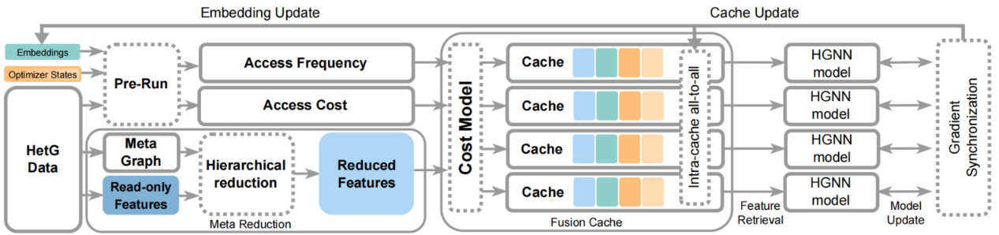
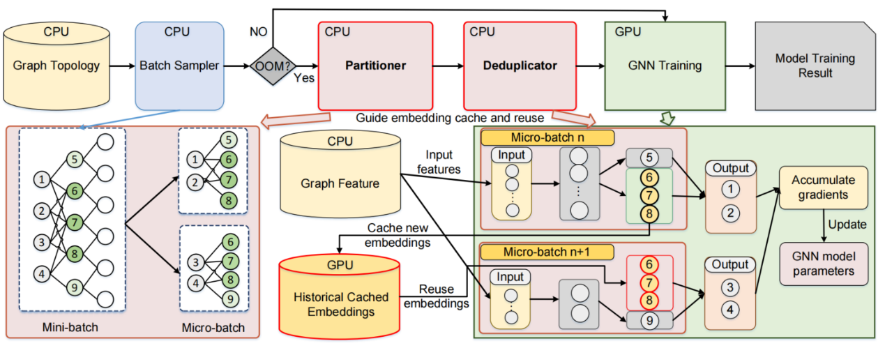
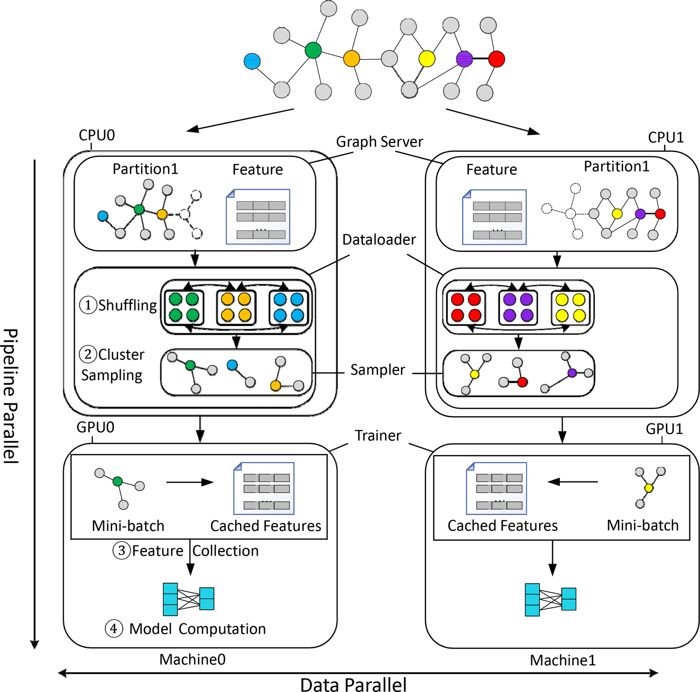

（四）面向大规模图的并行计算优化技术
(1)一种通信高效的多智能加速器异构图计算优化技术
大规模异构图计算的样本化训练是当前最主流的训练范式，其基本思路是通过子图采样在显存受限条件下完成模型的迭代更新。为了进一步减轻主机到智能加速器的数据搬运压力，业界广泛采用特征缓存策略（如DGL的特征缓存、Heta的节点级缓存），将频繁访问的节点特征或嵌入提前驻留在智能加速器显存中。然而，在超大规模异构图场景下，训练过程仍面临严重的通信瓶颈：一方面，高维只读特征的检索需要大量读传输；另一方面，可写嵌入和优化器状态的频繁更新又带来了高延迟的写回开销。现有的缓存方案大多采用统一的粗粒度节点级管理，未能充分区分异构图中不同数据类型的访问特性，导致缓存命中率偏低，硬件加速潜力难以充分发挥。

图1：语义感知特征降维与融合缓存的通信优化技术MeCache
项目研究提出了一种语义感知特征降维与融合缓存的通信优化技术MeCache，如图 1所示，其核心创新在于突破传统缓存技术中统一缓存策略的局限，支持不同节点类型依据语义重要性独立降维。MeCache针对各类数据类型分别构建差异化缓存结构，使只读特征采用高命中率替换策略、可写嵌入与优化器状态采用低延迟写回机制；同时通过设计数据访问的可融合性，例如允许特征压缩与缓存分配的动态调整，进一步提升缓存操作执行的灵活性。此外，MeCache引入自动化成本模型，通过构建涵盖传输开销、命中率与跨智能加速器内存冲突的优化模型，将最优缓存分配策略的搜索转化为启发式规划问题，从而自动求解最佳资源分配方案。在R-GCN等主流异构图模型训练任务上的实验结果显示，相较于DGL、Heta和PaGraph等方法，MeCache可实现最高3.4倍的端到端训练加速，且在MAG240M等大规模异构图环境下优势更为突出。
(2)一种基于NUMA架构感知的图计算优化算法
NUMA架构下的并行图计算是处理大规模图数据的关键技术路径，其核心挑战在于如何协同多核处理器与非均匀内存访问特性，以高效执行以遍历为核心的图算法（如BFS、SSSP、CC、PageRank）。传统分布式图系统虽能扩展至多机，但引入了高昂的跨机通信、负载不均与数据复制开销，未能充分利用单机多NUMA节点的硬件潜力。而既有的NUMA-aware多核图系统（如Polymer、Grazelle等）为优化远程内存访问，往往依赖复杂的图划分与顶点复制等预处理步骤，导致显著的预处理延迟与内存放大，使其难以高效处理亿级规模的大图。
为此，本研究提出了面向NUMA架构的轻量级并行图处理系统vGraph。其核心思路在于摒弃以“最小化跨NUMA访问”为目标的繁重预处理，转而采用极简的流水线化图加载与压缩方案，消除排序、索引与复制等开销。系统将图数据按NUMA节点切分为多个子图结构（sub-CSR/CSC），使每个顶点的拓扑信息与状态数据均驻留于其所属节点的本地内存中，从而在保持数据局部性的同时极大降低峰值内存占用。此外，vGraph通过进程级NUMA绑定、轻量推送缓冲区与异步预取等机制，进一步隐藏访存延迟并提升多核并行效率。实验结果表明，在384GB内存的四NUMA节点平台上，vGraph能够高效处理包含百亿量级边的大规模真实与合成图。相比Polymer、GraphIt、Grazelle及S-Gemini等系统，vGraph在BFS、CC、SSSP、PageRank等典型遍历算法上实现了数量级的内存效率提升与显著的端到端加速。该研究为NUMA架构下的高吞吐、低延迟图计算提供了一种轻量化、内存友好的系统实现范式，拓宽了单机处理超大规模图数据的可行边界。
(3)一种度修剪划分与冗余消除的内存高效微批次图计算技术
微批次训练是大规模图神经网络中新兴的训练范式，其核心在于通过梯度累积实现内存受限环境下的模型迭代更新。当前批次级图划分技术（如Betty的Metis分区、Auto-Divide GNN的子图划分）则通过将全批采样子图分片存储于智能加速器内存，有效缓解了单设备的内存压力，已成为大规模微批次训练的常用技术。然而，其依赖的Metis等图切割算法在大规模图中会引发严重内存瓶颈。现有方法通常利用复杂多级迭代进行划分，而忽略高度顶点导致的内存放大和冗余计算，导致内存资源紧张，计算资源闲置，无法充分发挥硬件潜力。

图2：度修剪划分与依赖感知冗余消除的内存优化技术PDGNN
项目研究提出了高效微批次GNN训练系统PDGNN，以内存优化为核心目标，通过度剪枝分区和依赖感知冗余消除技术，显著降低峰值内存占用并加速训练。PDGNN首先引入基于度剪枝的图划分策略，针对幂律分布特性，从全批次的多级二分图中移除高度顶点以简化并稀疏化图结构，然后应用Metis高效划分简化图。其次，PDGNN提出依赖感知冗余匹配与消除技术，利用层间依赖自动传播匹配，从早期隐藏层开始匹配冗余顶点，通过近似TSP求解器优化微批次执行顺序以最大化相邻批次间冗余；然后在智能加速器上缓存并复用冗余顶点的中间嵌入，消除冗余计算，同时保持模型准确性。实验结果表明，在多种数据集上，PDGNN相较Betty和Auto-Divide实现最高3.5倍的端到端训练加速，同时降低46%的峰值智能加速器内存、64%的CPU内存，并维持收敛精度。该研究系统性挖掘了微批次GNN训练场景下内存优化的潜力，为低开销、高效冗余消除的图处理提供了新范式。
(4)一种通信优化的分布式图神经网络训练技术
在分布式异构架构上的大规模图神经网络训练中，现有框架面临显著的通信和数据传输瓶颈。首先，批次采样过程中的随机内存访问导致数据局部性差，采样时间开销大，在分布式环境中，邻域扩展往往引发跨机器数据访问，产生大量通信开销，限制系统可扩展性。其次，特征聚合阶段的CPU到智能加速器数据传输冗余严重，高维顶点特征进一步加剧PCIe传输瓶颈，而现有缓存策略受限于智能加速器内存和命中率，无法充分减少冗余传输。最后，分布式设置下，图划分不当会放大通信成本，现有方法虽尝试限制邻域扩展，但可能丢失图信息或增加训练难度，难以在有限资源下兼顾高效通信与低延迟。

图3：一种通信优化的分布式图神经网络训练技术2PGraph
项目研究提出了适应大型图的分布式图神经网络训练系统2PGraph，以通信优化为核心目标，通过局部性感知调度、层感知缓存和自依赖分区等技术，显著降低跨设备数据交换和传输开销。2PGraph首先引入图局部性感知的顶点调度策略，根据图拓扑聚类信息重新排列训练顶点，使采样和聚合优先处理密集连接的顶点簇，提高数据访问局部性，减少随机访问并限制邻域扩展；在分布式环境中，此策略结合聚类和顶点置乱，确保随机性同时最小化跨机器通信。为进一步优化数据传输，2PGraph提出图神经网络层感知的动态特征缓存机制，在智能加速器上预缓存相关层特征分区，减少CPU-智能加速器冗余传输。2PGraph还结合自依赖图划分与聚类划分方法，最小化切割边并确保每个分区内信息完整，从而避免采样和聚合过程中的跨机器图数据交换，减少跨节点通信开销。实验结果表明，在8-智能加速器集群上，2PGraph相较DGL和PyG实现最高8.7倍加速，同时保持收敛精度。该研究将通信最小化确立为分布式GNN训练的核心优化路径，其自适应分区与层感知缓存策略为大规模图计算提供了高效、低通信的实用解决方案。
相关部分论文列表:
- Lizhi Zhang, Menghan Jia, Ping Gong, Zhiquan Lai, Dongsheng Li, Yongquan Fu, Ao Shen, Kai Lu. PDGNN: Efficient Micro-batch GNN Training via Degree-Pruned Partitioning and Redundancy Elimination. ACM TACO 2025.
- Jiezhong He, Menghan Jia, Yixin Chen, Zhouyang Liu, Dongsheng Li. GTSM: A multi-edge-centric temporal subgraph matching framework on GPUs. ACM TACO 2025.
- Xinbiao Gan, Tiejun Li, Chunye Gong, Dongsheng Li, Dezun Dong, Jie Liu, Kai Lu. GraphCSR: A Degree-Equalized CSR Format for Large-Scale Graph Processing. VLDB 2025.
- Menghan Jia, Yiming Zhang, Xinbiao Gan, Dongsheng Li, Erci Xu, Ruibo Wang, Kai Lu. vGraph: Memory-Efficient Multicore Graph Processing for Traversal-Centric Algorithms. IEEE SC 2022.
- Lizhi Zhang, Kai Lu, Zhiquan Lai, Yongquan Fu, Yu Tang, Dongsheng Li. Accelerating GNN Training by Adapting Large Graphs to Distributed Heterogeneous Architectures. IEEE TC 2023.